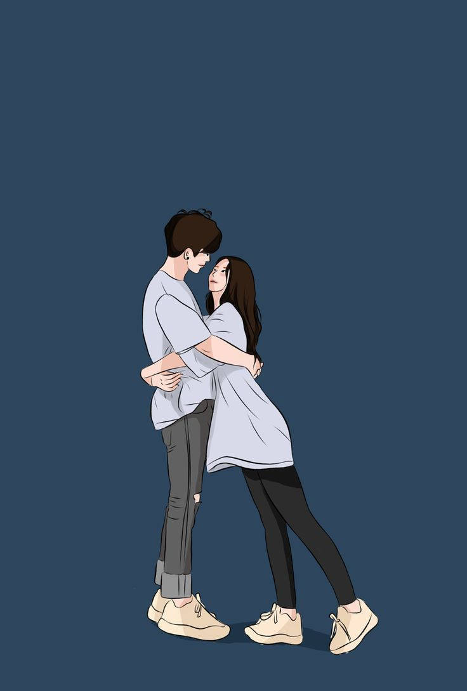
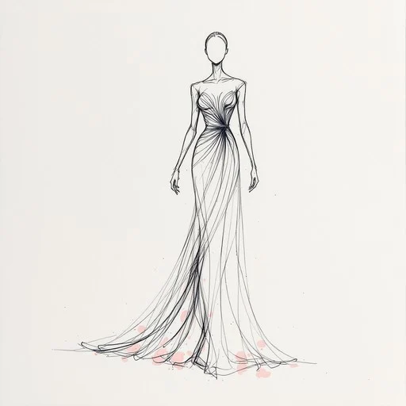

Unlock a universe of knowledge
Our intelligent search engine goes beyond titles. It understands the context of your research - helping you discover rare manuscripts, archived journals, and hidden literary gems with just a single keyword.


